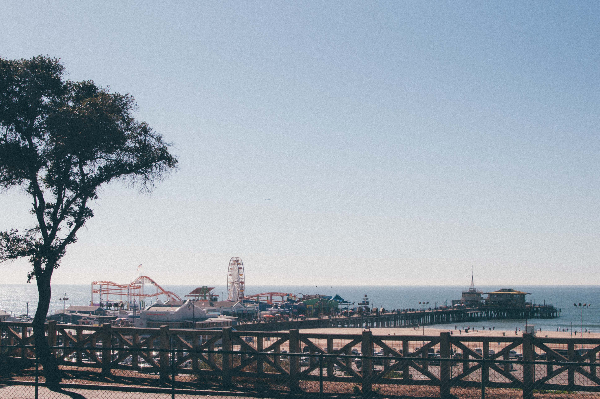
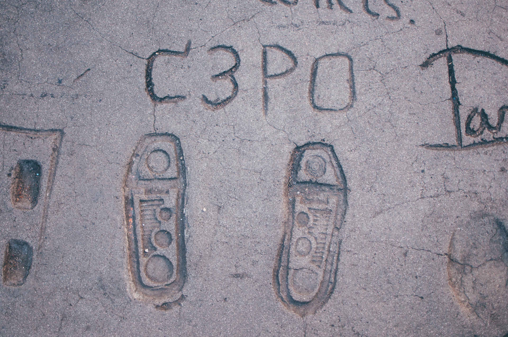

First Week Down
4th of February 2016
Wow... What an insane way to start my trip to the United States. As mentioned in my previous post, I had some concerns about my friend blizzard Jonas who was dumping uncomfortable levels of snow over the State of New York, unfornately the final destination in my flight schedule on saturday, the 23rd of Jan. Shortly after I learned that my flight from LAX to JFK Sat morning was cancelled, these concerns flourished into a strong feeling of panic.
It is difficult to emphasise the anxiety felt after a 12 hour flight across the Pacific ocean, all alone and with little to no help from any person in a country that I know nothing about. After (of course) getting lost on the way to my connecting flight desk of Virgin America, I spoke to a man who enlightened me with additional exciting news. The next available flight for me was on Tuesday the 26th - Three days later. My whole morning collapsed and buried me inside.
I am lucky that I have a nervous partner, that was anxiously sleeping next to her phone, set on full volume. It was about 5am NZ time when I found out I was going to be stuck in Los Angeles for these extra days. People do not really understand the feeling of stress and anxiety this situation put me in. A lot say sentences along the lines of "Three days in LA! Sounds great?". I honestly wish it felt like that. The problem is, I had no intention at all of travelling to LA, no accomodation booked, no knowledge of the city, no way to contact anyone besides wifi that cut in and out continuously and payphones from LAX, which is an airport that is a nightmare to navigate through. I was unprepared, scared and at a few points really wanted to turn around and come back to the safety of my home country.
By the time my mother woke up, I had been at the airport a few hours, been able to talk to Emily for a little bit, tried to squeeze information out of the flight desk and airport information desk, as well as ring my insurance company to find out what my coverage was. Fortunately, I had upgraded my insurance policy shortly before setting off to the states. This meant that I was covered for most things while being in LA, putting my mind about 40% at ease. Shout out to my mum, who came through and helped with Emily to find and book my hotels, which of course was really difficult with a great deal of people being stuck in LA.
After my strange smelling taxi drive to the hotel I was booked in, I felt a overwhelming feeling of relief safety, being able to put my luggage down without being worried it would go missing. I was able to connect to wifi and lay my body in a comforting horizonal direction and rest for a while.
To relieve anyone still reading, my Sunday morning was a great deal nicer than the day prior. I checked into a second hotel, as the first one did not have rooms for my second and third nights in LA. A successful checkin and another wifi code later, I felt that secure feeling once again. Carrying all my important possessions at one time is extremely unnerving, especially in public places. I explored the area around me a little bit, which mainly included a large mall complex with stores as far as the eye could see.
The mall was nice, and it was good to take my mind off of not being able to look at apartments in New York. At the end of the day though, it was a mall and I can see malls anywhere. I was encouraged to look at doing a tour of Los Angeles during my last full day in the city. By far, this was the most enjoyable part of my time in LA and I would encourange anyone stuck in a city they know nothing about to do something similar if possible.

The tour I booked was they called hop-on-hop-off, where the driver took a group of us to different destinations with us hopping out and exploring, returning to the bus at a designated time. Our drop off points were Venice Beach, Santa Monica, Fairfax Farmer's Market and Hollywood Boulevard. A lot to see in one day, but that is all I really had at that point.
Venice Beach (above), was an interesting experience. I struggled to understand the reasoning behind having hundreds of stalls, yet the products being sold are almost all the same. There were tens of tshirt shops, tattoo and piercing parlours, "medicinal" majuana shops, and skateboard stalls repeated along the strip of the beach. The lack of cafes is worrying to say the least. We are seriously spoiled for choice in Auckland, something I already miss so much. A decent coffee has yet to be found - Maybe I will have better luck in New York.
Santa Monica was a much nicer place for tourists in my opinion, coming from Venice Beach, Santa Monica has a more integrated feeling with the Los Angeles people. It is a place that blends into busy restaurants and stores. The Santa Monica Pier (above) was great to walk down, many talented buskers and cool pop-up stalls lead to an incredible view of the Pacific Ocean. There was also a seal peeking its head out of the water, probably looking for some lunch. The weather was also a comfortable 20 degrees, with the sun not piercing like it is in New Zealand.

I do not have any good photos from the Farmer's Market, only one of a hotdog I ate - But that did not make the cut unfortunately. This place was a collection of stores selling all types of food, including a whole shop dedicated to hot sauce. I found a coffee shop that did hot-brewed filter coffee, but even Emily makes better coffee than they did at that shop - All the fancy equipment could not fool me.
Last stop was the famous Hollywood Boulevard. The stars along the sidewalk, movie premier, Chinese Theater, seeing the Hollywood sign up on the hill, and seeing the crowds of people lining up for Jimmy Kimmel all added to the typical tourist experience ending my busy day. I felt a sense of weird excitement seeing Emma Watson, Daniel Radcliffe and Rupert Grint's hand and foot prints in concrete, as well as pride seeing Peter Jackson's name on a star. I used the opportunity in Hollywood to buy a beanie with "Cali" on it as a souvenir and reminder of this unplanned three day trip to Los Angeles.
I am now successfully on the decent into New York, heading into some strong turbulance... Great. I am excited and relieved to be almost here and not stuck in American limbo any longer. My next goal over the coming 4 days, is to find a (semi) permanent place to live in Brooklyn or Lower East Side. I also need to open a bank account and follow up on my final visa requirments for working in the US. Tomorrow, I am meeting with someone who has a great place that is really convinient for getting to my work everyday, which also begins next week. There is a lot to get in order before I will feel settled, Within the next few weeks, I hope I will be happy to call NY my home for a little while.